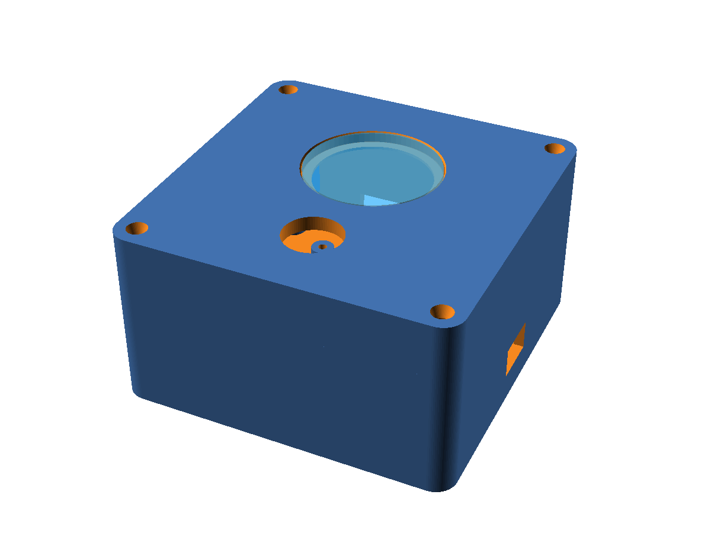
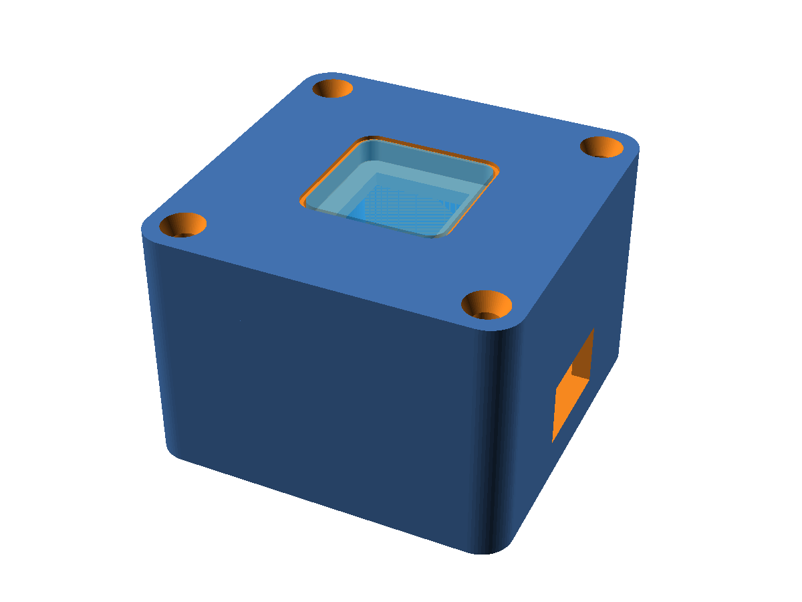
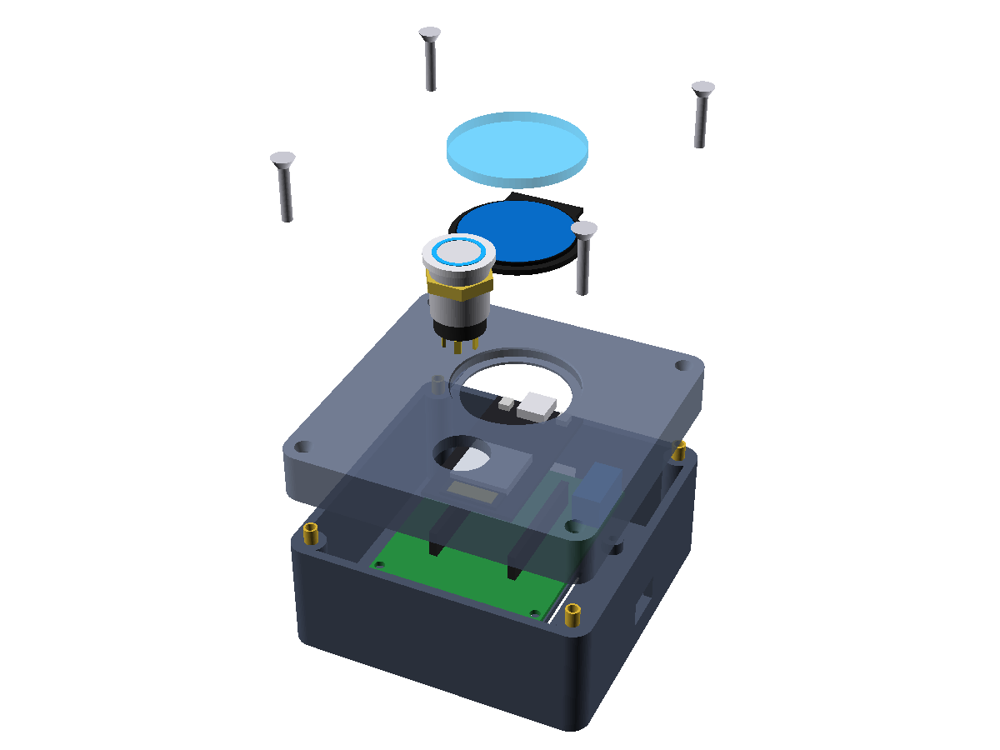
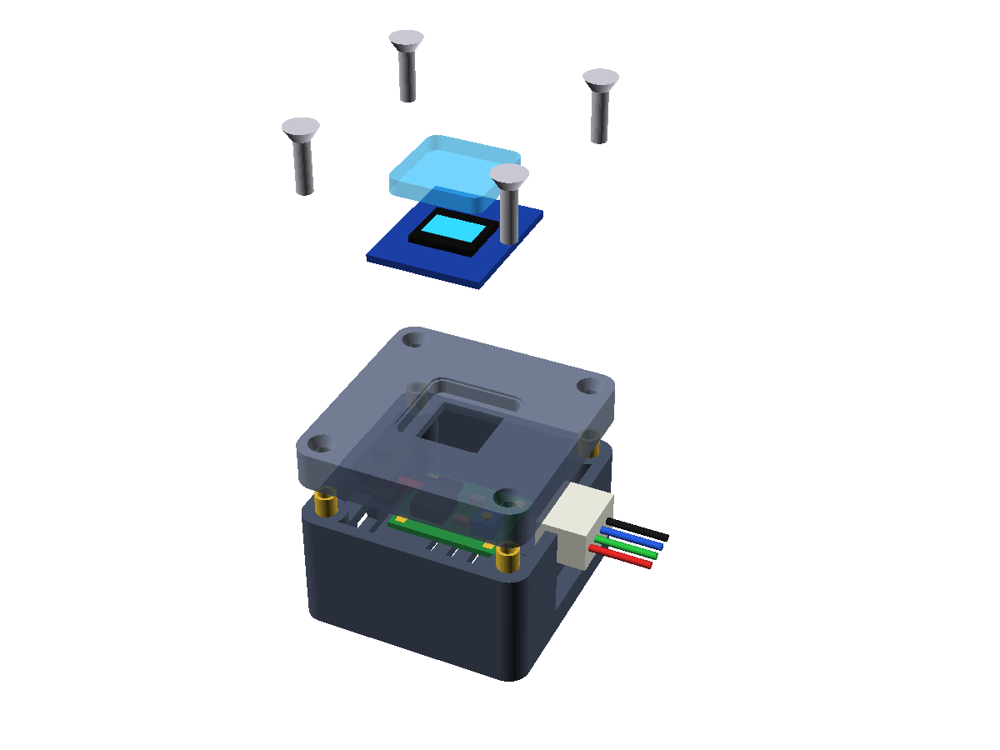

El operador gira el encoder en el Centro de Mando o acciona el pulsador en cabina a 12 metros de altura. En 800 milisegundos, el llamado entra con sonido y vibración háptica al WhatsApp del técnico en turno. La tira LED WS2815 inicia una barra dinámica visible a 50 metros y si pasan 5 minutos sin atención, el sistema escala automáticamente al Supervisor.


Diseñado con microcontrolador ESP32-WROOM-32 y pantalla IPS circular GC9A01 de 240x240 a todo color. El operador selecciona el motivo de falla exacto en menos de 2 segundos mediante un encoder magnético industrial, utilizable con guantes de soldador y en ambientes siderúrgicos severos.
Presione los botones abajo para experimentar cómo reacciona el sistema con sonido de relé, tiras LED dinámicas y mensajes de WhatsApp en tiempo real.
Descubra cuánto dinero y horas productivas pierde su planta al año en tiempos de espera no registrados.
Sin calcomanías baratas ni timbres de casa. Carcasas industriales con grado de impacto, microcontroladores dedicados y pantallas de alta visibilidad.

Equipado con pantalla circular IPS GC9A01 de 240x240 a todo color y un encoder rotativo industrial con botón central. Permite seleccionar el motivo exacto de falla en menos de 2 segundos desde un catálogo dinámico sincronizado en la nube.

Instalado directamente en la estructura de la grúa o estación de ensamble. Su tira LED direccionable de 12V cuenta con doble línea de datos redundante: si un LED falla, la tira continúa operando sin apagarse.
Capas tecnológicas diseñadas para operar sin interrupciones bajo condiciones extremas de planta.
Comunicación inalámbrica peer-to-peer de 2.4 GHz sin dependencia de routers comerciales. Latencia de transmisión inferior a 4 ms.
Cola circular de 64 eventos guardada en memoria flash no volátil. Cero pérdida de eventos ante cortes de energía o caídas de red.
Tira WS2815 a 12V con doble línea de datos. Si un micro-LED recibe un impacto físico, la señal fluye por el bus alterno.
Registro forense con sello de tiempo UTC-6 Chihuahua, operador, electromecánico, refacciones empleadas, costos y desglose de los 3 tiempos Andon.
Abre de forma nativa en el navegador WebOS/Tizen de cualquier Smart TV de 65"-85" en nave. Incluye megafonía por voz TTS y rotación de cámaras.
Comparativa directa contra radios de dos vías, torretas fijas y sistemas propietarios tipo MMCall.
| Característica | Radios de 2 Vías (Walkie-Talkie) | Sistemas Tipo MMCall (Pagers) | SCADA ANDON PRO 4.0 |
|---|---|---|---|
| Dispositivo Receptor | Radio portátil ruidoso y pesado | Reloj localizador monocromático ($200 USD c/u) | WhatsApp Bot + Smartphone / Wear OS nativo |
| Confirmación 1-Toque de Asistencia | No existe | Requiere botón físico adicional | Botón digital "Tomar Falla" en celular o web |
| Métrica de los 3 Tiempos Andon | Cero registro | Solo mide tiempo total de llamado | T. Reacción + T. Reparación + T. Total |
| Escalamiento Multinivel Automático | Humano manual | Requiere PC local encendida con licencia | Servidor Nube: N2 a Supervisor (>5m), N3 a Gerente (>15m) |
| Señalización Lumínica en Piso | Ninguna | Torreta fija de 3 colores sin cronómetro | Barra LED interactiva que se llena en 5m + Estrobo |
| Visualización en Smart TV | Incompatible | Requiere PC dedicada por TV con Windows | Abre nativo en navegador de cualquier TV de 65"-85" |
| Deducción de Refacciones / Almacén | Incompatible | No integrado | Deduce partes y calcula costo de refacciones por grúa |
| Entrega de Guardia Automática | Bitácora en papel | Exportación manual a archivo CSV | Shift Handover automático a WhatsApp 20 min antes |